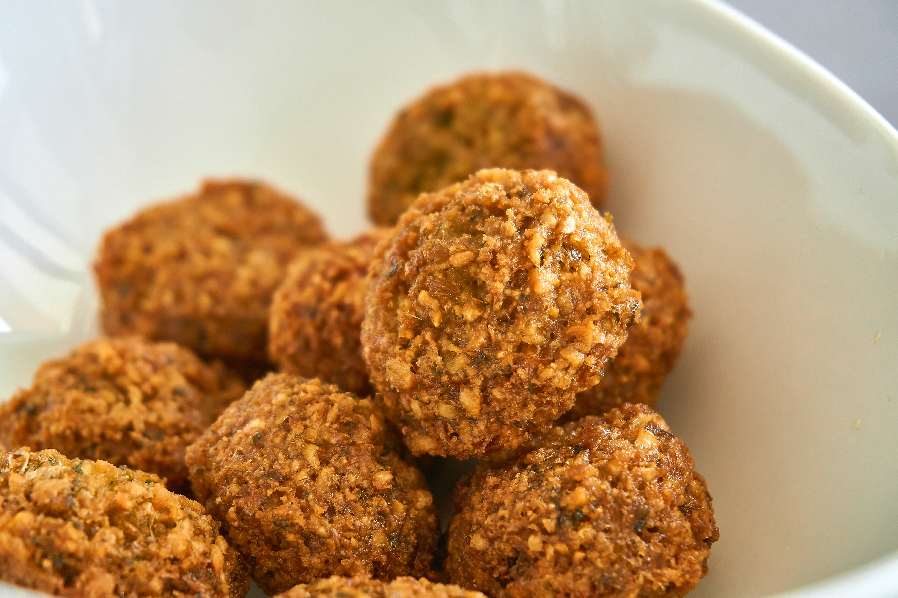
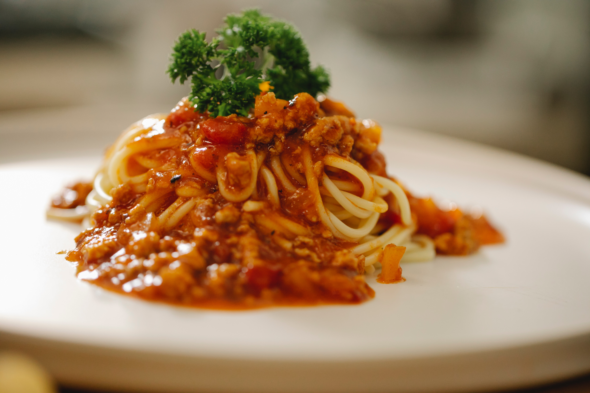

|
|
||
Pizza |
||
| 1. | Margaretta tomat, ost. |
85:- |
| 2. | Venezia tomat, tonfisk, skinka. |
95:- |
| 3. | Vesuvio tomat, ost, skinka. |
95:- |
| 4. | Hawaii |
95:- |
| 5. | Capricciosa tomatsås, ost, skinka, champinjoner. |
95:- |
| 6. | Africana tomatsås, ost, ananas, banan, curry, nötter. |
95:- |
| 7. | Vegetarinan tomatsås, ost, lök, paprika, oliver, champinjoner, sparris, kronärtskocka. |
95:- |
| 8. | Capresse tomatsås, ost, oliver, mozzarella,tomat, vitlök. |
95:- |
| 9. | Primavera tomatsås, ost, skinka, räkor. |
95:- |
| 10. | Calzona(inbakade_pizza) tomatsås, ost, skinka. |
95:- |
| 11. | Caruso tomatsås, ost, köttfärs, lök, vitlök, paprika, champinjoner. |
95:- |
| 12 | Pavarotti tomatsås, ost, kyckling, vitlök, paprika, lök. |
95:- |
| 13. | Italiano tomatsås, ost, kyckling, ananas, banan, curry, nötter. |
99:- |
| 14. | Favorit tomatsås, ost, vitost, vitlök, lök, oliver, tomat. |
70:- |
| 15. | Frutti di Marre tomatsås, ost, vitlök, räkor, kräftstjärtar, crabbfish. |
114:- |
| 16. | Quattro Stagioni tomatsås, ost, skinka, champinjoner, räkor, kronärtskocka. |
99:- |
| 17. | Amigo tomatsås, ost, oxfile, nötter, banan, curry. |
114:- |
| 18. | El grecco tomatsås, ost, köttfärs, vitost, vitlök, lök, oliver. |
95:- |
| 19. | Mexicana tomatsås, ost, köttfärs(stark), skinka, vitlök, lök, paprika. |
95:- |
| 20. | Pescatore tomatsås, ost, ananas, banan, räkor, kräftstjärtar, curry, nötter. |
114:- |
| 21. | Halv inbakat tomatsås, ost, oxfile, lök, vitost, bearnaisesås. |
114:- |

| 22. | Ciao Ciao tomat, ost, oxfile, vitlök, lök, champinjoner. |
114:- |
| 23. | Papas special tomatsås, ost, oxfile, sparris, kräftstjärtar, bearnaisesås. |
114:- |
| 24. | Albres(inbakat) tomatsås, ost, oxfile, lök, champinjoner, gorgonzola. |
114:- |
| 25. | Cosenza tomatsås, ost, oxfile, gorgonzola, bearnaisesås. |
114:- |
| 26. | Jalapeno tomatsås, ost, oxfile, lök, köttfärs, vitlöksås, Jalapeno. |
114:- |
| 27. | Catiatore tomatsås, ost, lök, salami, oliver. |
95:- |
| 28. | Kebab pizza tomatsås, ost, lök, champinjoner, kebabkött, feferoni, kebabsås. |
95:- |
| 29. | Reale tomatsås, ost, oxfile, ägg, bearnaisesås. |
114:- |
| 30. | Kebab special tomatsås, ost, kebabkött, isbergsallad, gurka, tomat, feferoni, kebabsås. |
114:- |
| 31. | Stensture tomatsås, ost, oxfile, sparris, lök, bearnaisesås. |
114:- |
| 32. | Husets special tomatsås, ost, oxfile, paprika, lök, tomat, vitlöksås. |
114:- | 33. | Mamma mia tomatsås, ost, oxfile, oliver, lök, tomat, mozzarella. |
114:- |
Falafel |

| . | Falafelrulle hembakat tunnbröd, falafel, tomat, gurka, isbergsallad, pepperoni, sås |
90:- |
| . | Falafeltallrik falafel,tomat,gurka,isbergsallad, feferoni,pommes frites, kebabsås | 90:- |
övrigt
Barn pizza(nr. 1-9 up till 12 år)
.
Dela en pizza med en person
15:-
.
68:-
.
Barn pasta(nr. 1-3 up till 12 år)
68:-
 |
||
Pasta |
||
| 1. | Spaghetti Bolognes |
95:- |
| 2. | Lasagne |
55:- |
| 3. | Curry kyckling, currysås, nötter, lök, paprika. |
95:- |
| 4. | Amore Räkor, krabbfisk, kräftstjärtar, vitlök, tomatgräddsås. |
114:- |
| 5. | Fileto oxfile, paprika. lök, vitlök, champinjoner, pepparsås. |
60:- |
| 6. | gorgonzola oxfile, lök, champinjoner, gorgonzola, gräddsås. |
114:- |
Kebab |
||
| Kebabtallrik kebabkött, tomat, gurka, sallad, lök, feferoni, pommes frites, kebabsås. |
95:- | |
Kebabrulle |
90:- | |
Sallader |
||
|
|
||
| 1. | Ost och skinka sallad skinka, ost, isbergsallad, ananas, tomat, gurka. | 95:- |
| 2. | Bondsallad isbergsallad, tomat, gurka, vitost, lök, oliver. |
95:- |
| 3. | Kycklingsallad kyckling, isbergsallad, gurka, tomat, paprika, lök. |
95:- |
| 4. | Kebabsallad Isbergsallad, tomat, gurka, kebabkött, lök, vitost, feferoni kebabsås |
95:- |
| 5. | Tonfisk sallad tonfisk, isbergsallad, gurka, lök, paprika, oliver tomat. |
95:- |